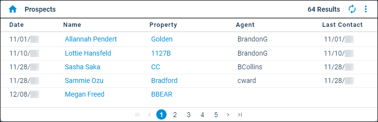

Source: https://rmxhelp.rentmanager.com/Topics/Express/Other/Dashboard-Tiles/Prospects.htm
Prospects (Dashboard Tile)
The Prospects dashboard tile helps you track prospects that have been created in Rent Manager through multiple sources. You can use this tile to review the number of prospects created at certain properties, identify their assigned leasing agents, and monitor when they were last contacted.
The information on this dashboard tile is represented in a list.
Related Privileges
| Group | Privilege | Column |
|---|---|---|
| Setup | Edit own dashboards | Enabled |
For more information, refer to Control User Access.

Filter Information
Related Privileges
| Group | Privilege | Column |
|---|---|---|
| Setup | Edit dashboard data filters | Enabled |
For more information, refer to Control User Access.
To filter the information that displays in the dashboard tile, click  arrow_forwardSettings to open the Prospects Data Filters pop-up. The available filter options are listed below.
arrow_forwardSettings to open the Prospects Data Filters pop-up. The available filter options are listed below.
| Option | Description | |||||||
|---|---|---|---|---|---|---|---|---|
|
Property Filter |
Each property whose prospects are included in the tile. To include all current and future properties, select <All Properties>. Alternatively, select a property Group from the drop-down list. If <All Properties> is selected, you can also check Include inactive if 'All Properties' selected to calculate averages for all current and future properties whether they are active or inactive. More Information This field populates only with the properties to which you have access. Your access to properties can be managed from your user account or on the property's details page. For more information, refer to Limit Access to a Property. |
|||||||
|
First contact X days ago |
The number of days prior to the current date that prospects were contacted in order to be included in the tile. For example, if you enter 14, prospects display only if they were initially contacted in the past two weeks. |
|||||||
|
Exclude follow-ups in the last X days |
The number of days prior to the current date that prospects were followed up with in order to be included in the tile. For example, if you enter 7, prospects display only if a follow-up contact task has not been completed for them in the past week. More Information Follow-ups are indicated by entering a Follow-up Date on a prospect history/note item and completing the follow-up on the designated date. For more information, refer to Add a Prospect History/Note. |
|||||||
|
Exclude last contact > X days |
The number of days prior to the current date that prospects have not been contacted in order to be included in the tile. For example, if you enter 30, prospects display only if they have not been follow-up contact in the past week. Enter a value to exclude prospects from the results who have not been contacted in more than X days. For example, entering 30 displays only prospects who have not been contacted in the past month. More Information In order for communication with a prospect to update the Last Contact date in this tile, you must add a call-, email-, or visit-type history/note item to the prospect's account. For more information, refer to Add a Prospect Call to History/Notes, Add a Prospect Email History/Note, or Add a Prospect Visit to History/Notes. |
|||||||
|
Prospect Stage Filter |
The prospect stage(s) whose associated prospects are included in the tile results. For example, you may want to exclude prospects in the Waitlisted stage if they do not need to be contacted in the foreseeable future. |
|||||||
|
Agent Filter |
The Rent Manager users with the Sales Rep/Leasing Agent role whose assigned prospects are included in the tile results. To include all current and future leasing agents, select All Agents. To include prospects without an assigned leasing agent, select No Agent. |
|||||||
|
Created By |
The source(s) from which prospects were created in Rent Manager that are included in the tile results. Each source is described below. |
|||||||
|
||||||||
|
Ignore dashboard property filter |
If checked, override the property filter configured on the Dashboard. |
Column Descriptions
The information that displays on the tile is organized into the following columns.
| Column | Description |
|---|---|
|
Date |
The date on which the prospect was created. |
|
Name |
The name of the prospect. |
|
Property |
The property specified as the default for the prospect by the guest card, application, or creating user. |
|
Agent |
The Leasing Agent specified on the prospect's details page. |
|
Last Contact |
The date on which the prospect was last contacted by a Rent Manager user. The last contact date is determined by the call, email, or visit history/note item on the account with the most recent Start Date. Related Preferences Call history/note items must have Spoke with prospect checked, and/or the system preference to Always update Last Contact Date when a call note is added enabled, to be considered when determining last contact date. For more information, refer to Prospect (System Preferences). |